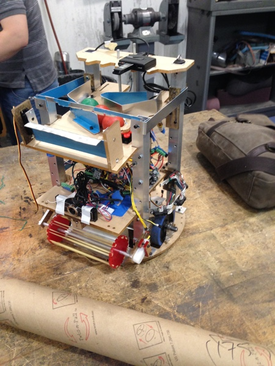

January 2014
I was a mechanical designer and project manager of a five person team which built and programmed an autonomous robot for MIT's MASLAB competition. I worked with another mechanical designer to develop a complete CAD assembly of our robot in Solidworks which we used to laser cut and machine the robot from aluminum and acrylic. We placed 3rd overall and special award for our use of ROS.
